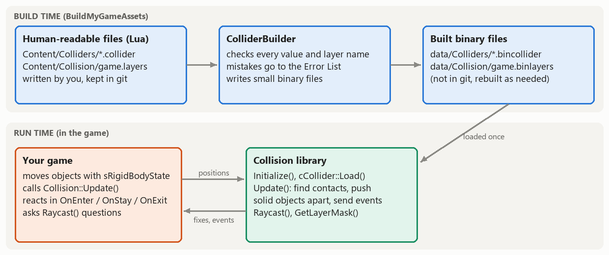

Engine System Proposal: Collision
Box and sphere colliders defined in data files, enter / stay / exit events, solid objects that stop each other, and raycasts
The idea
My Engine System will be a collision system: a static library that knows where the solid parts of a game are and tells the game when they touch. Almost every final project game needs this, and it is something we haven't built yet: so far our objects pass straight through each other and through the floor.
From the point of view of a classmate making a game with it:
- Give an object a collider by writing a small data file (a sphere or a box, which layer it is in, and whether it is solid, a trigger, or static) and loading it next to the object's mesh.
- Walls and floors stop things. A solid object that moves into a static one is pushed back out and its velocity into the surface is removed, so the player can walk on a floor, stand on a box and stop at a wall without any extra code.
- The game is told what happened. Each collider can have
OnEnter,OnStayandOnExitfunctions (for example a lambda) that are called when it starts touching, keeps touching or stops touching another collider. - Triggers report overlaps but never push anything: pickups, checkpoints, the goal, damage zones.
- Layers decide what touches what. One data file lists the game's layers and which pairs interact (the player touches enemies and pickups, enemies don't collect pickups, and so on), so there is no special-case code in the game.
- Raycasts answer "what is in this direction, and how far away?": shooting, line of sight, and checking whether the player is on the ground before a jump.
What it deliberately is not: a physics engine. It doesn't add gravity, forces, bouncing or rotation. Objects keep moving with the engine's existing sRigidBodyState (a game that wants gravity sets an acceleration, as we already can), and the collision system only detects contacts and keeps solid objects apart. This keeps the scope realistic and keeps the library easy to drop into any of our games.

Features
What I expect to finish (the requirements I am holding myself to):
- Two shapes: spheres and axis-aligned boxes (boxes don't rotate with their object; see the stretch goals), with an optional offset from the object's position.
- Human-readable Lua files for colliders and for the layer table, and a ColliderBuilder that checks them (unknown layer names, negative sizes, a box without a size...) and writes small binary files. Mistakes are reported in Visual Studio's Error List with the file, and with the line number when Lua knows it, exactly like the MeshBuilder.
- Detection between every pair of enabled colliders whose layers interact: sphere-sphere, sphere-box and box-box, each giving a contact normal and a penetration depth.
- Events with enter / stay / exit tracking between updates, including an exit when a collider is disabled or destroyed while it is touching something.
- Solid response: a dynamic collider is pushed out of a static one along the contact normal (two dynamic colliders are pushed apart equally), and the part of its velocity that points into the surface is removed. Triggers never push.
- Raycasts against spheres and boxes, filtered by a layer mask, returning the closest hit (collider, point, normal, distance).
- Documentation for users: a short guide covering setup, both file formats with every field, what to add to AssetBuildFunctions.lua and AssetsToBuild.lua, and how to use the interface, plus comments in every public header.
How someone would use it
1. Set up the solution. Add the Collision static library and the ColliderBuilder tool to the solution, add a reference from the game project to Collision, and make BuildMyGameAssets depend on ColliderBuilder (the same way it depends on MeshBuilder). The library has no dependencies beyond the engine projects we all have (Math, Physics, Platform, Results, Logging...).
2. Describe the layers. One file per game lists the layers and which of them interact:
-- MyGame_/Content/Collision/game.layers
return
{
-- Every collider belongs to one of these layers (at most 32)
layers = { "world", "player", "enemy", "pickup" },
-- The pairs of layers that touch each other;
-- colliders in any pair of layers that isn't listed pass through each other without events
interactions =
{
{ "player", "world" },
{ "player", "enemy" },
{ "player", "pickup" },
{ "enemy", "world" },
},
}3. Write a collider file for each kind of object. Only shape, its size and layer are required:
-- MyGame_/Content/Colliders/player.collider
return
{
shape = "sphere",
radius = 0.5,
layer = "player",
-- Optional values (shown with their defaults):
-- center = { x = 0.0, y = 0.0, z = 0.0 }, -- offset from the object's position
-- isTrigger = false, -- true: report overlaps, but never push anything
-- isStatic = false, -- true: never moves and is never pushed (walls, floors)
}-- MyGame_/Content/Colliders/floor.collider
return
{
shape = "box",
halfSize = { x = 4.0, y = 0.05, z = 4.0 },
center = { x = 0.0, y = -0.05, z = 0.0 }, -- so the top of the box is at the object's position
layer = "world",
isStatic = true,
}4. Tell the asset build about the files. This is what the user guide will tell people to add:
-- AssetBuildFunctions.lua (copy once; ColliderBuilder.exe builds both kinds of file)
NewAssetTypeInfo( "collisionlayers",
{
ConvertSourceRelativePathToBuiltRelativePath = function( i_sourceRelativePath )
-- Collision/game.layers -> Collision/game.binlayers
return ( i_sourceRelativePath:gsub( "%.layers$", ".binlayers" ) )
end,
GetBuilderRelativePath = function() return "ColliderBuilder.exe" end,
}
)
NewAssetTypeInfo( "colliders",
{
ConvertSourceRelativePathToBuiltRelativePath = function( i_sourceRelativePath )
-- Colliders/player.collider -> Colliders/player.bincollider
return ( i_sourceRelativePath:gsub( "%.collider$", ".bincollider" ) )
end,
GetBuilderRelativePath = function() return "ColliderBuilder.exe" end,
-- Layer names are checked against the layers file, so colliders are rebuilt whenever it changes
ShouldTargetBeBuilt = function( i_lastWriteTime_builtAsset )
return GetLastWriteTime( GameSourceContentDir .. "Collision/game.layers" ) > i_lastWriteTime_builtAsset
end,
}
)
-- AssetsToBuild.lua (list your own files)
collisionlayers = { "Collision/game.layers" },
colliders = { "Colliders/player.collider", "Colliders/floor.collider", "Colliders/coin.collider" },5. Use it in the game. The public interface (everything platform-independent; the exact names may still change while I build it):
namespace eae6320
{
namespace Collision
{
// Call from your game's Initialize() and CleanUp()
cResult Initialize( const char* const i_path_layers ); // e.g. "data/Collision/game.binlayers"
cResult CleanUp();
// Call once per simulation update, after your objects have moved:
// it pushes solid objects apart and then calls the event functions
void Update();
// What an event tells you
struct sContact
{
cCollider* other; // The collider that was touched
Math::sVector normal; // Points from the other collider toward this one
float penetrationDepth; // How far they overlapped before they were pushed apart
};
class cCollider
{
public:
// Loads a built collider file and attaches it to a rigid body that your game object owns:
// the collider reads its position from it, and if the collider is solid and not static
// it moves the rigid body out of whatever it hits and stops its velocity into the surface
static cResult Load( const char* const i_path, Physics::sRigidBodyState& io_rigidBody, cCollider*& o_collider );
// (reference counted like cMesh: DecrementReferenceCount() removes it from the world)
// Any of these can be left empty
std::function<void( const sContact& )> OnEnter, OnStay, OnExit;
// Lets you find your own object from inside an event
void* userData = nullptr;
void SetEnabled( const bool i_isEnabled ); // A disabled collider is ignored (and its touches end)
bool IsTrigger() const;
uint8_t GetLayer() const;
};
// Queries
struct sRaycastHit { cCollider* collider; Math::sVector point, normal; float distance; };
bool Raycast( const Math::sVector& i_origin, const Math::sVector& i_direction, const float i_maxDistance,
sRaycastHit& o_hit, const uint32_t i_layerMask = ~0u );
uint32_t GetLayerMask( const char* const i_layerName ); // e.g. to raycast only against "world"
}
}And a typical use in a game:
// cMyGame::Initialize()
Collision::Initialize( "data/Collision/game.binlayers" );
Collision::cCollider::Load( "data/Colliders/player.bincollider", m_player.rigidBodyState, m_player.collider );
Collision::cCollider::Load( "data/Colliders/floor.bincollider", m_floor.rigidBodyState, m_floor.collider );
Collision::cCollider::Load( "data/Colliders/coin.bincollider", m_coin.rigidBodyState, m_coin.collider ); // a trigger
m_coin.collider->userData = &m_coin;
m_player.collider->OnEnter = [this]( const Collision::sContact& i_contact )
{
if ( i_contact.other->userData == &m_coin )
{
m_score += 1;
m_coin.collider->SetEnabled( false ); // (and stop drawing it)
}
};
// cMyGame::UpdateSimulationBasedOnTime()
m_player.rigidBodyState.Update( i_elapsedSecondCount_sinceLastUpdate ); // move everything as usual...
Collision::Update(); // ...then let the collision system fix overlaps and send the events
// Is the player standing on something? (e.g. before allowing a jump)
Collision::sRaycastHit hit;
const bool isOnGround = Collision::Raycast( m_player.rigidBodyState.position, Math::sVector( 0.0f, -1.0f, 0.0f ), 0.55f,
hit, Collision::GetLayerMask( "world" ) );What I expect to implement
- Collision (Engine/Collision, a static library): loading built files with
Platform::LoadBinaryFile()(four-or-so extractions, no loops, like the meshes), the list of live colliders, the narrow-phase tests (sphere-sphere, closest point on a box for sphere-box, smallest-overlap axis for box-box), the push-out and velocity correction, pair tracking for enter / stay / exit, and the ray tests (quadratic for spheres, the slab method for boxes). - ColliderBuilder (Tools/ColliderBuilder): reads both kinds of Lua file at build time, validates them, turns layer names into indices and the interaction list into one 32-bit mask per layer, and writes the binary files. At run-time two colliders can touch only if bit
bofmask[a]is set, which is one AND per pair. - A demo in MyGame: the floor and some walls and boxes become static colliders, the player sphere can move and stand on them, a coin trigger is collected, and a raycast checks whether the player is on the ground. It doubles as the example in the user guide.
- Platform independence: the public headers only use the engine's math and physics types and standard C++. The collision math itself has no platform-specific parts, so I don't expect to need a
.win.cppfile; if something platform-specific does come up it will go into one, following the Concurrency library's pattern, and never into a header. The binary files are built per platform by the builder, like every other asset.
| Milestone | Date | Plan |
|---|---|---|
| Update #1 | Nov 3 | Collision library and ColliderBuilder projects; both file formats with build-time errors; loading; overlap tests for all shape pairs; enter / stay / exit events printed to the log in MyGame. |
| Update #2 | Nov 10 | Solid response and velocity correction; triggers; layer table; raycasts; the MyGame demo; first version of the user guide. |
| Presentation / write-up | Nov 16 / Nov 19 | Support for anyone who has started using it, polish and documentation, then stretch goals as time allows. |
Challenges I expect
- Our rendering extrapolates. The game draws objects where they will be a fraction of a frame later (
PredictFutureTransform()). If the collision system only fixed the position, an object that is still moving into a wall would be drawn sinking into it every frame. That is why the response also removes the velocity into the surface. - Changing things from inside an event. Collecting a coin usually means disabling or destroying its collider inside an event, while the system is still walking its list of contacts. Changes made during events will be queued and applied after all of them have been sent.
- Enter and exit bookkeeping. Exit events have to be sent for touches that end because a collider was disabled or released, not only because objects moved apart, and nothing may refer to a collider after it is gone.
- Lifetime of the rigid body. A collider keeps a pointer to its game object's
sRigidBodyState, so the object must not move in memory (for example inside a std::vector that grows). This has to be obvious in the documentation and caught by asserts where possible. - Tunneling. Detection runs once per simulation update, so a small, fast object can jump through a thin wall between two updates. I will document the limit (roughly: an object shouldn't move more than its own size per update). Fixing it properly is a stretch goal.
- A build-time dependency between files. Collider files use layer names that are defined in another file, so colliders have to be rebuilt when the layers file changes. That is what the
ShouldTargetBeBuilt()override above does, the same way shaders are rebuilt when shaders.inc changes.
Stretch goals
- Oriented boxes that rotate with their object (separating axis test).
- Capsules, the usual shape for characters.
- A broad phase (a uniform grid or sort-and-sweep) so that hundreds of colliders don't need every pair tested, with measurements of the difference.
- Swept spheres for fast projectiles, to stop tunneling.
- Bounciness and friction values in the collider file.
- A debug view that shows colliders by drawing the existing box and sphere meshes at their positions, using only graphics features we already have.